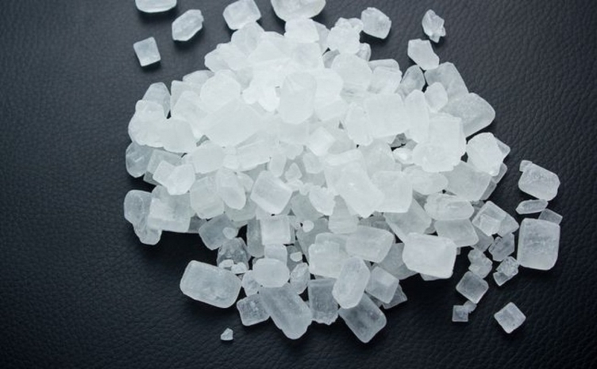

Amfetamina
Amfetamina este un stimulent potent al sistemului nervos central, utilizat în tratamentul ADHD, narcolepsiei, obezității si bolii Parkinson. Este clasificat ca drog de mare risc, astfel operatiunile cu Amfetamina se pedepsesc cu inchisoare de la 5 la 15 ani.
Oxicodona
Oxicodona este un analgezic opioid semi-sintetic, un agonist al receptorilor opioizi. Pe cale orală, are un efect de aproximativ 1,5 ori mai mare decât morfina, pentru o masă echivalentă de substanță. Este clasificat ca drog de mare risc, astfel operatiunile cu Oxicodona se pedepsesc cu inchisoare de la 5 la 15 ani.